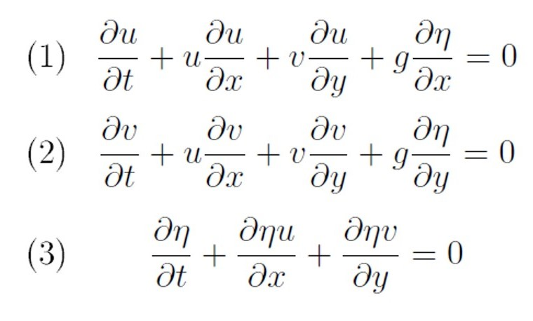

Current Projects
Data Visualization - Inlet Morphodynamics1)Data Visualization
If you are anything like me, these equations may not mean a whole lot to you, even if you do understand the math.
While some people have incredible mathmetical intuition and literally think in the language of math, I do not. I am a visual learner and so I turn complex data and equations into something that makes better sense to my way of thinking. For example, I have discretized the shallow water equations (SWE - shown above) so that they can be applied over a span of time and space as a model. The video below is an example simulation of this simple model where a few different wave components are created at one border and then propegate over a sloping bottom, all according to the SWE. Now this makes sense to me.
Go ahead, go full screen and turn the quality up to its highest (1080p) through the gear icon. The arrows show the relative magnitude and direction of the depth integrated water velocity. It is neat to note how water first moves backwards and then forwards as a wave propegates by. Have you ever felt this while being in the water at a beach?
2)Inlet Morphodynamics
You may be thinking, ‘what the heck is Inlet Morphodynamics?’
Well Wikipedia has an answer for you, but the shorter answer is the simple breakdown of the words:
a. morpho – meaning form or shape
b. dynamic – meaning change, particularly active change
So morphodynamics simply refers to the active change in the shape of something, and in this case, the coast.
I specifically study how the shape of the bottom changes around tidal inlets.